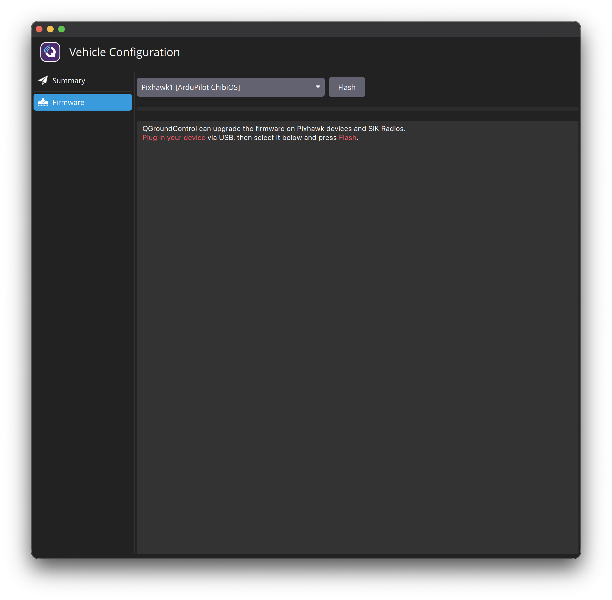
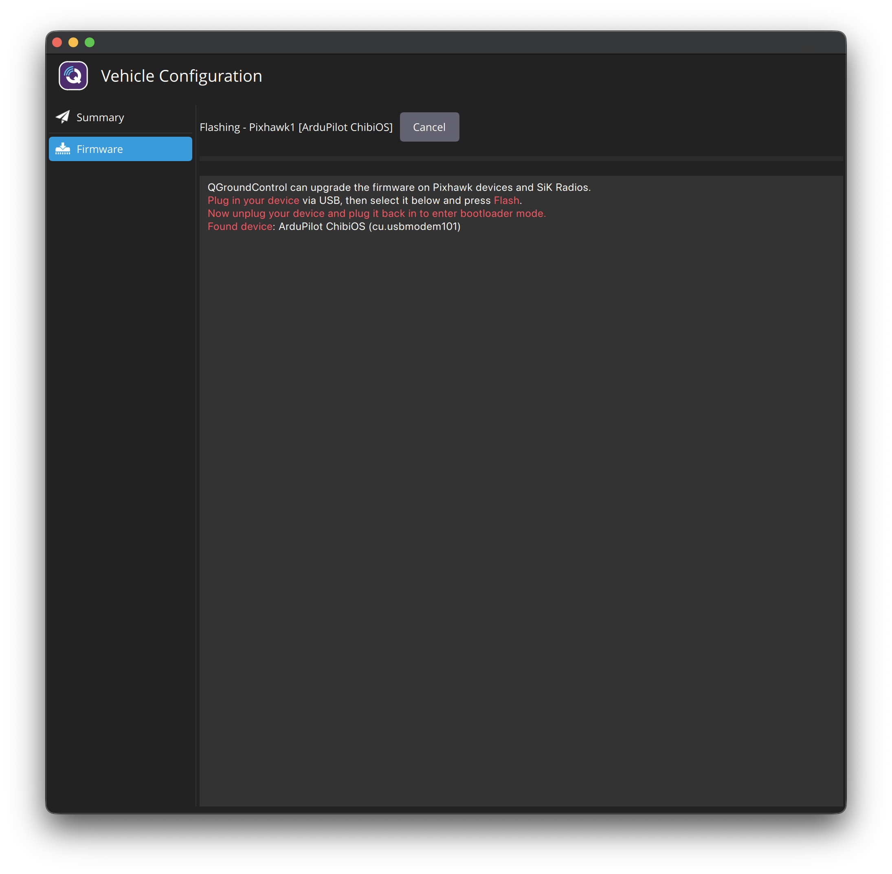
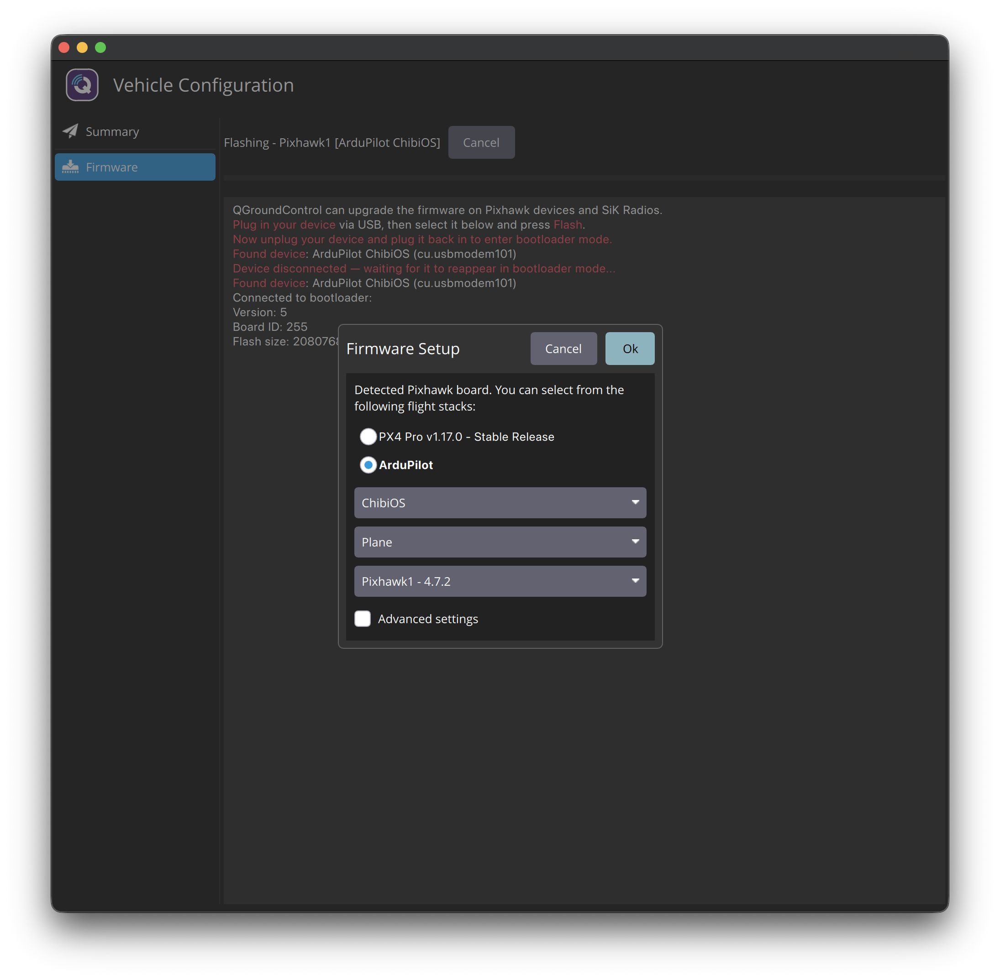
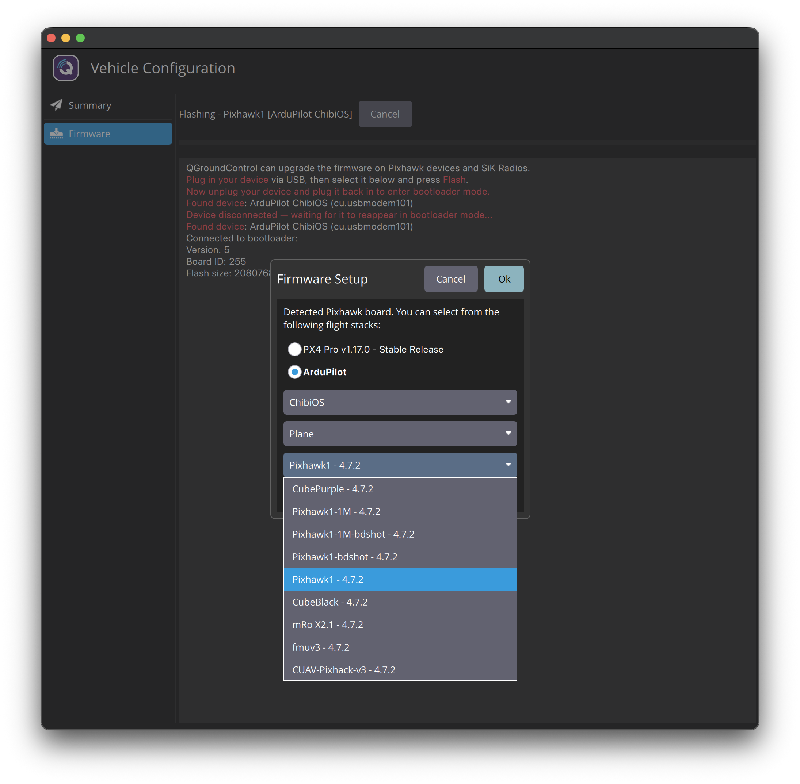
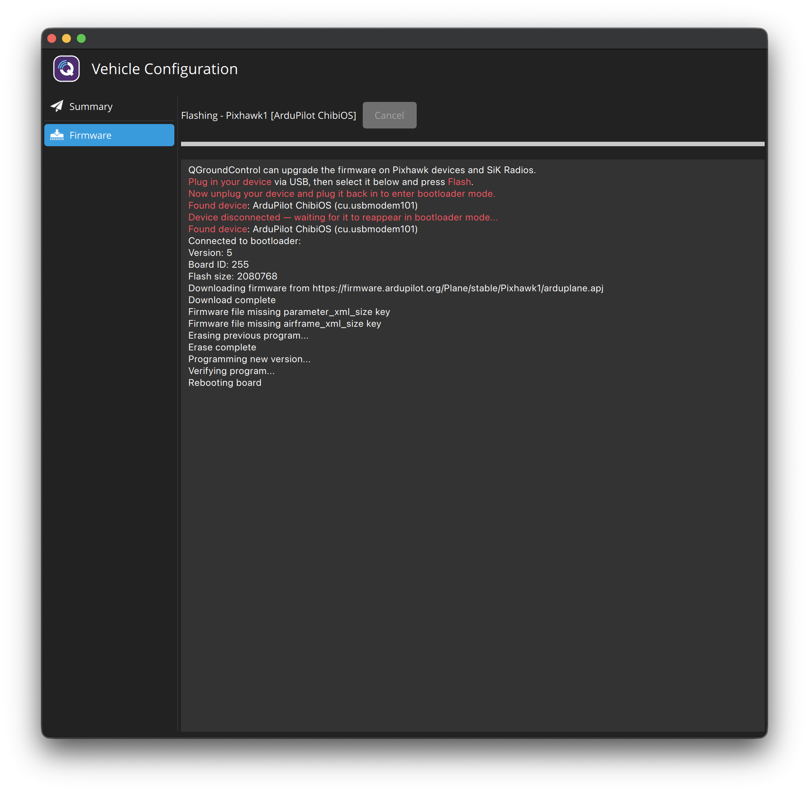
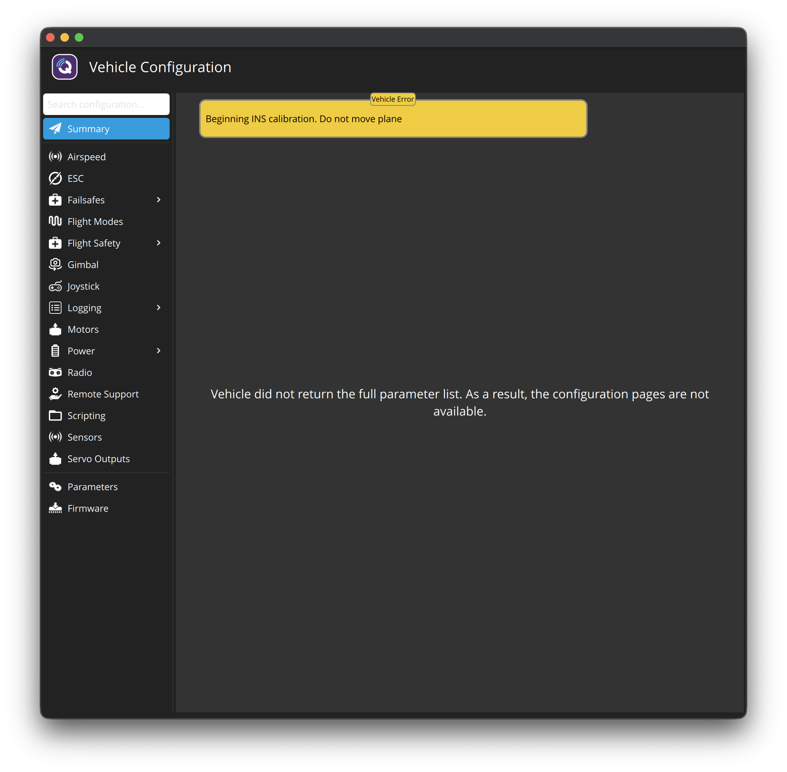

Mettre à jour le firmware vers ArduPlane 4.7.2 (en gardant vos paramètres)
Objectif : remplacer ArduPlane 4.7.1 par la dernière version stable 4.7.2, avec la bonne version pour votre carte (Pixhawk1), sans perdre l'ancienne configuration du Y3. Ensuite, vérifier que les paramètres ont été conservés.
Q_…) dans la liste des paramètres de QGC. Utilisez toujours Parameters → Tools → Refresh environ 30 s après le démarrage avant d'enregistrer une sauvegarde (constaté à 20:11).- USB uniquement. Pas de LiPo. La documentation de QGC indique que l'appareil ne doit pas être alimenté par batterie pendant le flashage.
- Gardez votre Mac branché sur son chargeur. Ne débranchez jamais le câble USB pendant que la barre de progression avance.
- Si quelque chose tourne mal, le Pixhawk n'est pas « briqué » : son bootloader reste sur la carte et vous pouvez toujours le reflasher.
Point de départ (d'après le Guide 01)
- Carte : Pixhawk 2.4.8, cible ArduPilot
Pixhawk1(version complète 2 Mo) · sous ArduPlane 4.7.1 · QGC 5.1.5 sur macOS. - Ancienne configuration = configuration Y3 complète (Tri, bascule VectoredYaw, empennage en V…), jamais volée. Décision : la garder et la corriger dans les guides suivants.
- Sauvegarde :
backups/params-backup_2026-10-17_before-guide02.params✅ - J'ai vérifié le serveur officiel des firmwares ArduPilot (02:19) :
Plane/stable/Pixhawk1/= "Plane: version to 4.7.2", compilé le 2026-10-13. 4.7.2 est donc bien la version stable actuelle pour votre carte.
Est-ce vraiment la 4.7.2 et pas la 4.7.1 que vous avez déjà ? (vérifié à 02:25)
| Preuve | Indique |
|---|---|
| Message de démarrage de votre carte (Guide 01) | ArduPlane V4.7.1 (dbe79216) : actuellement installé |
| Fenêtre QGC (votre capture) | "Running 4.7.1, latest stable is 4.7.2" |
Serveur Plane/stable/Pixhawk1/firmware-version.txt | 4.7.2-FIRMWARE_VERSION_TYPE_OFFICIAL |
Serveur git-version.txt | commit fb773567, "Plane: version to 4.7.2", 2026-10-11 |
En-tête du fichier téléchargeable arduplane.apj | carte Pixhawk1 (board_id 9), git fb773567, 1,56 Mo sur 2,08 Mo, donc il tient ✅ |
| Liste des dossiers du serveur | stable-4.7.0, stable-4.7.1, stable-4.7.2 : 4.7.2 est la plus récente |
La version installée est dbe79216 et la nouvelle est fb773567 : ce sont donc bien deux versions différentes. Après la mise à jour, le message de démarrage doit afficher V4.7.2 (fb773567). C'est la preuve de l'étape 6.
Pourquoi les paramètres devraient être conservés
Le firmware (le programme) et les paramètres (vos réglages) sont stockés à des endroits différents. Sur un Pixhawk 1, les paramètres sont dans une puce mémoire séparée (FRAM). Une mise à jour normale ArduPlane → ArduPlane ne remplace que le programme. ArduPilot convertit automatiquement les paramètres renommés. Les paramètres ne sont effacés que si vous installez un autre type de véhicule (par ex. Copter). C'est pourquoi l'étape 4 comporte une liste de contrôle : il faut que ce soit Plane.
Certains utilisateurs ont quand même constaté des réinitialisations (rare), c'est pourquoi nous avons fait la sauvegarde et pourquoi l'étape 7 vérifie.
Étapes
FirmwareUpgrade.qml, tag v5.1.5), donc les noms de boutons et l'ordre ci-dessous correspondent à votre écran.
Ouvrir la page Firmware ✅ (fait à 02:31)
Icône Q violette → Vehicle Configuration → Firmware. Vous voyez ceci :

La liste déroulante indique Pixhawk1 [ArduPilot ChibiOS]. C'est votre carte, déjà sélectionnée ✅. Rien n'a encore été modifié. Le bouton Flash ne fait que lancer le processus ; la vraie confirmation d'installation vient plus tard (étape 4).
Cliquer sur Flash
La zone de texte sous les boutons affichera, en rouge :
"Now unplug your device and plug it back in to enter bootloader mode."
Un bouton Cancel apparaît à la place de Flash : vous pouvez encore faire marche arrière ici.

Débrancher l'USB, attendre 3 secondes, le rebrancher
Branchez directement sur le Mac. Ne cliquez sur rien dans QGC, observez simplement. La zone de texte devrait ajouter ces nouvelles lignes :
- Quand vous débranchez : "Device disconnected — waiting for it to reappear in bootloader mode..."
- Quand vous rebranchez : une seconde ligne "Found device: …"
- Puis : "Connected to bootloader:" · "Version: …" · "Board ID: 9" · "Flash size: …"
Si vous ne voyez pas la ligne 1 (« Device disconnected… »), le débranchement n'a pas été détecté. Débranchez à nouveau et attendez 3 secondes avant de rebrancher.
Remarque : Board ID 255 est un numéro inhabituel pour cette carte (le fichier firmware est prévu pour l'ID 9). Le flashage a quand même été accepté et vérifié, et la taille flash de 2 080 768 = exactement les 2 Mo attendus par le fichier Pixhawk1. Nous confirmons le résultat avec le message de démarrage à l'étape 6.
Pas de fenêtre après environ 10 s ? Débranchez/rebranchez encore une fois. Toujours rien : appuyez sur Cancel et envoyez-moi une capture d'écran.
Remplir la fenêtre « Firmware Setup ». ⚠️ Changez le type de véhicule !
- Sélectionnez le bouton radio ArduPilot (pas « PX4 Pro »). Trois listes déroulantes apparaissent en dessous.
- Liste 1 :
ChibiOS(par défaut). Laissez-la ✅ - Liste 2 (type de véhicule) : elle démarre sur
Multi-Rotor. ⚠️ CHANGEZ-LA ENPlane.
Les options sont : Multi-Rotor · Helicopter · Plane · Rover · Sub. Multi-Rotor correspond à ArduCopter et effacerait votre configuration. Votre VTOL QuadPlane est un Plane. - Liste 3 (carte + version) : attendez que « Downloading list of available firmwares… » disparaisse. Puis choisissez exactement
Pixhawk1 - 4.7.2.
La liste contient aussi d'autres cartes avec la même version (par ex.Pixhawk1-1M - 4.7.2,Pixhawk1-bdshot - 4.7.2,fmuv2,fmuv3,CubeBlack,CubePurple…). QGC peut présélectionner la mauvaise, donc vérifiez. Si elle affiche « Choose board type », ouvrez-la et choisissezPixhawk1 - 4.7.2. - Laissez « Advanced settings » décoché.
| ✋ Point de contrôle : avant de cliquer sur OK | Doit être |
|---|---|
| Flight stack | ArduPilot |
| Liste 1 | ChibiOS |
| Liste 2 | Plane ← ❌ PAS Multi-Rotor |
| Liste 3 | Pixhawk1 - 4.7.2 ← pas -1M, pas -bdshot, pas Cube… |
| Advanced settings | décoché |
📸 Faites une capture de la fenêtre. Si quelque chose ne correspond pas, ou en cas de doute : cliquez sur Cancel (rien n'est écrit sur la carte avant d'appuyer sur OK) et envoyez-moi la capture.
J'ai vérifié la liste officielle ArduPilot que QGC télécharge (manifest.json) : pour votre carte (ID 9), Plane stable contient l'entrée Pixhawk1 en version 4.7.2, fichier Plane/stable/Pixhawk1/arduplane.apj.


Cliquer sur OK et patienter
La zone de texte affiche : Downloading firmware from …Plane/stable/Pixhawk1/arduplane.apj → effacement → programmation → vérification, avec une barre de progression. Environ 1 à 2 minutes. Une fois l'effacement commencé, Cancel est grisé. C'est normal.
Si la mise à jour échoue : QGC conseille lui-même de brancher directement sur un port USB alimenté (sans hub) et d'alimenter uniquement par USB, pas par batterie. Puis recommencez à partir de l'étape 2.
Les 2 lignes "Firmware file missing parameter_xml_size key" / "airframe_xml_size key" sont sans danger : ces clés n'existent que dans les fichiers firmware PX4, pas dans les fichiers
.apj d'ArduPilot.
« Vehicle did not return the full parameter list » : se reconnecter proprement

Vu à 02:38, juste après le redémarrage. Cela ne veut pas dire que vos paramètres sont perdus. QGC s'est reconnecté alors que la carte était encore en train de démarrer (voir « Beginning INS calibration… ») et a commencé à télécharger tous les paramètres avant que la carte soit prête, donc le téléchargement était incomplet. Au premier démarrage d'un nouveau firmware, ArduPilot peut aussi être en train de convertir des paramètres, ce qui prend plus de temps.
- Débranchez l'USB, attendez 5 secondes, rebranchez-le.
- Ne touchez pas la carte et ne cliquez sur rien pendant 30 secondes (calibration des gyroscopes au démarrage + téléchargement des paramètres). Surveillez la barre de progression sous la barre d'outils supérieure de QGC.
- Ouvrez à nouveau Vehicle Configuration. Les pages devraient maintenant s'ouvrir normalement.
Toujours le même message ? Dans Parameters → Tools, cliquez sur Refresh. Toujours en échec → faites une capture et envoyez-la-moi ; ne chargez pas encore la sauvegarde.
Vérifier la nouvelle version dans Vehicle Messages
- Laissez QGC ouvert. Débranchez l'USB, attendez 5 s, rebranchez-le, pour que QGC soit ouvert pendant le démarrage et capte les lignes de démarrage (comme vu au Guide 01).
- Cliquez sur la zone d'état en haut à gauche (« Not Ready ») → Vehicle Messages.
ArduPlane V4.7.2 (fb773567) ← nouvelle version ✅ (l'ancienne était dbe79216)Pixhawk1 00200035 … ← même version de carte ✅QuadPlane initialised, Frame: TRI ← l'ancienne configuration a été conservée ✅et plus de fenêtre « not running latest stable firmware ».
📸 Faites une capture (ou un copier-coller) des messages.
Vérifier que les paramètres ont été conservés + enregistrer une nouvelle sauvegarde
- Vehicle Configuration → Parameters. (Si la fenêtre sans danger « Parameters are missing… FS_OPTIONS… » réapparaît, cliquez sur Ok. Voir Guide 01.)
- Recherchez ces paramètres et comparez avec les valeurs du Guide 01 :
Rechercher Attendu (depuis 4.7.1) Q_TILT_TYPEVectoredYaw Q_FRAME_CLASSTri SERVO9_FUNCTIONTiltMotorFrontLeft SERVO3_FUNCTIONVTailLeft AHRS_ORIENTATIONYaw90 (nous le corrigeons au Guide 03, ne le changez pas maintenant) - Tools → Save to file… → enregistrez sous
params_after-guide02_4.7.2.paramsdansdronev2/backups/.
Solution de repli : installer depuis un fichier téléchargé
À utiliser uniquement si les étapes 2–3 ne fonctionnent pas (carte jamais détectée, ou Plane/Pixhawk1 non proposé) :
- Téléchargez le fichier officiel :
firmware.ardupilot.org/Plane/stable/Pixhawk1/arduplane.apj. Utilisez le fichier .apj, pas le.hex(documentation ArduPilot : le .hex sert uniquement en DFU/JTAG). - Page Firmware → Flash → débrancher/rebrancher → dans la fenêtre Firmware Setup : ArduPilot → cochez Advanced settings → dans la liste des versions, choisissez "Custom firmware file…" → OK → sélectionnez le fichier
arduplane.apjtéléchargé. - Puis reprenez à l'étape 5.
Résultats : firmware mis à jour ✅ (02:44–02:47)
Étapes 5b–7 : tout est confirmé
| Vérification | Résultat |
|---|---|
| 5b. Reconnexion | ✅ Les pages de configuration fonctionnent à nouveau après la reconnexion propre |
| 6. Message de démarrage | ✅ ArduPlane V4.7.2 (fb773567) · Pixhawk1 00200035… (même version de carte) · QuadPlane initialised, Frame: TRI · IOMCU OK · RCOut: PWM:1-14 |
| 7. Paramètres clés | ✅ Q_TILT_TYPE = VectoredYaw · Q_FRAME_CLASS = Tri (7) · SERVO9_FUNCTION = TiltMotorFrontLeft (75) · SERVO3_FUNCTION = VTailLeft (79) · AHRS_ORIENTATION = Yaw90 (2, corrigé au Guide 03) |
| 7. Nouvelle sauvegarde | ✅ backups/params_after-guide02_4.7.2.params, en-tête "Version: 4.7.2 · Git Revision: fb773567" |
| Sensor Status | Comme avant : gyroscope, accéléromètre, magnétomètre, baromètre, journalisation, batterie Normal. GPS / RC / AHRS / Pre-Arm en « Error » pour les raisons connues. |
Journal complet des messages : guide2_screenshots/vehicle-messages-4.7.2-boot_2026-10-17_0244.txt
Comparaison de l'ancienne et de la nouvelle sauvegarde (tous les paramètres)
Aucun paramètre n'a été perdu. 0 paramètre a disparu, et chaque réglage du Y3 (bascule, châssis, sorties, empennage en V, modes, batterie) est identique. Différences :
| Changement | Avant → Après | Signification |
|---|---|---|
| Nombre de paramètres | 1 276 → 1 430 (+154) | Le nouveau fichier contient les groupes QuadPlane complets : Q_A_* (PID d'attitude VTOL), Q_P_* (contrôle de position), Q_M_* (moteurs VTOL), Q_LOIT_*, Q_WP_*, Q_WVANE_*, GPS1_*. Ils sont tous aux valeurs par défaut, ce qui est normal pour une configuration jamais réglée ni volée. On ne sait pas pourquoi l'ancienne sauvegarde ne les contenait pas. Peut-être un enregistrement incomplet dans QGC. Le nouveau fichier est désormais notre référence. |
⚠️ SERVO7_FUNCTION | 0 (Disabled) → 39 | 39 = la sortie servo de lacet arrière du tricoptère. ArduPilot l'affecte automatiquement pour un châssis Tri. Votre Y3 utilise VectoredYaw (lacet par les 2 servos de bascule), donc rien n'est branché sur MAIN 7, et c'est correct. Laissez MAIN 7 vide. Nous revoyons cela au Guide 07. |
GPS1_TYPE | 0 → 1 (Auto) | GPS activé. Conforme à la détection du M8N ✅ |
RC1–4_DZ | 0 → 30 | Zone morte des manches (par défaut). Vérifiée lors de la calibration radio au Guide 05. |
EK3_CHECK_SCALE 150 → 100 · BRD_SD_SLOWDOWN 1 → 2 | Retour aux valeurs par défaut du firmware. Pas de souci. | |
| Offsets des gyroscopes / pression au sol du baromètre / compteur de démarrages | petites variations | Normal : remesurés à chaque démarrage. |
⚠️ Un nouveau message : PreArm: Internal errors 0x100000 l:1375 flow_of_ctrl
Il est apparu une fois au démarrage (02:44:24 Critical: Internal Errors 0x100000). Il n'était pas dans le journal de démarrage de la 4.7.1. Je l'ai décodé à partir du code source d'ArduPilot 4.7.2 :
0x100000= contrôle interne "flow_of_control" (situations « on ne devrait jamais arriver ici »).l:1375= ligne 1375 deAP_HAL_ChibiOS/RCOutput.cpp, dansRCOutput::push(): les sorties servos/moteurs ont été envoyées (« push ») sans avoir d'abord été regroupées (« cork »). C'est un contrôle logiciel de séquencement sur le pilote des sorties, pas un capteur cassé ni une carte défectueuse.- Le code de Plane qui pilote les sorties n'a pas changé entre 4.7.1 et 4.7.2 (j'ai comparé les deux versions). Le déclencheur est donc plus probablement la configuration que la mise à jour. Une piste est le
SERVO7_FUNCTION = 39nouvellement affecté automatiquement sur un Tri VectoredYaw, mais c'est une hypothèse, pas une certitude. - Il empêche l'armement (c'est une erreur PreArm), il doit donc avoir disparu avant tout test moteur. Il n'a pas d'importance pour les guides suivants (orientation, calibration).
Test de suivi : l'erreur interne revient-elle ?
Les erreurs internes sont mémorisées jusqu'au prochain redémarrage, nous vérifions donc si elle se reproduit lors d'un démarrage propre :
- Débranchez l'USB, attendez 5 s, rebranchez-le. Ne touchez pas la carte pendant 30 s.
- Ouvrez Vehicle Messages et cherchez
Internal Errors.
Selon la réponse, soit je poursuis l'investigation (un changement de paramètre à la fois, expliqué au préalable), soit nous passons au Guide 03. Ne modifiez encore aucun paramètre vous-même pour cela.
Internal Errors au démarrage, et la liste PreArm (répétée 6× sur 2,5 min) ne la contient plus. Il ne reste que les 7 éléments PreArm attendus. C'était donc un événement unique au premier démarrage après le flashage. Ce démarrage a aussi affecté automatiquement SERVO7_FUNCTION=39 et créé les nouveaux paramètres Q_, ce qui correspond à une séquence d'initialisation au premier démarrage, même si le déclencheur exact n'est pas prouvé. Point à surveiller : si elle réapparaît un jour, notez ce qui s'est passé juste avant (par ex. un changement de paramètre).Journal :
guide2_screenshots/vehicle-messages-recheck_2026-10-17_0304.txtDebug: RCInput: decoding PPM (IOMCU). Le Pixhawk reçoit un signal PPM sur RC IN depuis la chaîne de votre récepteur FlySky. « Radio failsafe on » est toujours présent (émetteur éteint ? gaz trop bas ?). Nous réglons cela au Guide 05.Dépannage
| Problème | Essayez ceci |
|---|---|
| Carte jamais détectée sur la page Firmware | Assurez-vous que QGC est sur la page Firmware avant de brancher. Essayez un autre câble de données/port. Quittez Mission Planner s'il est ouvert. |
| Flashage arrêté à mi-chemin / erreur | Pas de panique. Débranchez, attendez, rebranchez sur la page Firmware et recommencez. Le bootloader est toujours là. |
Après le flashage, les valeurs sont revenues par défaut (par ex. Q_ENABLE = 0, pas de message « Frame: TRI ») | Restaurer : Parameters → Tools → Load from file… → backups/params-backup_2026-10-17_before-guide02.params → puis Tools → Reboot Vehicle. Prévenez-moi avant de le faire. |
| Affiche toujours « not running latest stable » | Envoyez-moi les Vehicle Messages. Le flashage ne s'est peut-être pas terminé. |
Compte rendu
Capture Firmware Setup✅ ArduPilot / ChibiOS / Plane / Pixhawk1 - 4.7.2Journal de flashage✅ effacement → programmation → vérification → redémarrageVehicle Messages après redémarrage✅ V4.7.2 (fb773567), Frame TRI5 valeurs + nouvelle sauvegarde✅ toutes identiques ; sauvegarde enregistréeQu'y a-t-il sur RC IN ?✅ Récepteur FlySky iA10BÉtape 8 : erreur interne après un redémarrage propre ?✅ Disparue (03:04)- Encore ouvert : le Pixhawk est-il installé dans l'avion, et dans quelle direction pointe sa flèche ?
Sources
- QGroundControl : Loading Firmware (pas de batterie, USB direct, option ArduPilot, Advanced settings)
- ArduPilot : Loading Firmware (« le firmware Pixhawk1 est généralement le meilleur choix » ; utiliser .apj, pas .hex)
- Code source de QGroundControl v5.1.5 : FirmwareUpgrade.qml (Flash → débrancher/rebrancher → fenêtre « Firmware Setup » ; types de véhicule Multi-Rotor/Helicopter/Plane/Rover/Sub, Multi-Rotor par défaut)
- Code source d'ArduPilot 4.7.2 : RCOutput.cpp ligne 1375 (push() sans cork() → flow_of_control) et AP_InternalError.h (0x100000 = flow_of_control)
- Manifeste des firmwares ArduPilot (board_id 9, Plane OFFICIAL : "Pixhawk1 - 4.7.2")
- Serveur de firmwares ArduPilot : Plane / stable / Pixhawk1 (git-version.txt : "Plane: version to 4.7.2")
- Forum ArduPilot : Update to the newest firmware (configuration conservée lors des mises à jour ; la 4.7 convertit automatiquement les paramètres renommés)
- Forum ArduPilot : paramètres réinitialisés après flashage (rare, donc gardez une sauvegarde)